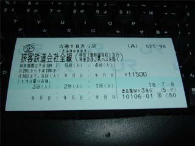

髪の毛がだんだん大変なことに…
本来なら今日は高松行くはずでした．いや，それ言っちゃうと先週も行くはずだったんだけどね…
先週は「起きたら昼だった → やめ」って感じで．
今日は「行く気マンチキ → 雨が強くなってきたよー？(・ω・) → やめ」
ohrin と検討（？）会議をした結果こうなりました．
これから散髪行ってきます．
アイマスは今月の23日にでも兵庫の加古川へ行ってやってきたいと思います．この日ならライブの影響でプレイ人数が若干減るだろうし，テストも教養科目なら終わってることが判明したし．アイマスのライブはもうチケットの関係上，つーか流石に東京までは無理ってなわけで行きませんよ？(^^; 願わくばダンス流行以外であって下さい…
昨日散髪から帰ってきてプログラムをいじってました．で，ちょっと寝不足気味だったので16時くらいから昼寝をしていたんですよ．
気がつくと深夜1時．母からの「もう晩ご飯いらんの？」という内線電話で目が覚めました．
「ああ，もういらん，ごめん」といって電話を切り，そのまま歯を磨いて再び寝てしまいました．
で，起きたら10時．実質18時間寝てたことに… 寝すぎですね．やっぱり平日寝無さ過ぎました．
今週からもうちょっと改善した方がいいなぁコレは… なんていうかゲーセン行き過ぎだ．昨日は行ってないけど．今日も行かないけど．
今回みたいに書きたいことが2つあって，それがまったく関連のない事柄の場合にメインタイトルをどうしようか悩んでいました．
昔はサブタイトル制だったんだけどね（2005年12月以前の日記を見れば分かる）．いずれこれを CGI 化するときのこと考えて，出来るなら単純な構造に，ということで今のようにタイトルは一つだけ，brタグだけで文章整列（これも昔はきちんとpタグ使って分けていたｗ）というようになったのです．
で，とりあえず7月からの日記はヘッダを一つ減らしました．メインタイトル自体を廃止しました．ほんとはここに更に日記を編集した時間も書いていきたいところだったんですが，いつになるか分からない CGI 化のときまで時刻を記し続けるっていうのは正直めんｄなんでボツにしましたｗ
まぁ，結局見た目に拘っても中身がおもしろくないとダメっていう結論なんですけどね(^^;
トラックバックの仕様に関しては変更なしです．これはサーバを変えるまできっと変わりません．でもまぁ誰も使わないんだろうけどさー(ノ∀｀)
ライブラリの仕様書を書くのってめんどいね(・ω・)
構造体とマクロ定数と関数の使い方を事細かに説明…
しかもそれが大抵はプログラム中に書いたコメントに若干の手直しを加えただけのものだっていうのが．単調とまでも言わない単調作業の繰り返しで，大変です．多分専用の便利ツールはあるんだろうけどなぁ… 探して使い方覚える方が今は時間的にマズい，ってことで，めんどくさいと思いつつも単調作業を繰り返しｗ
明日の23:30からBS2の「マンガノゲンバ」に荒木飛呂彦が出る．
アラームのセットを忘れないように >自分
備忘録と言っても，これを見るのが明日の23:30以降になってしまうとまったく意味を成さないんだけどねｗ
まぁ備忘録の備忘録をどっかに書いとくべきですな(・ω・) 筆箱の中とか．ん？二度手間？
EarthWalker なる会社がこの商法で逮捕されましたね．未だにこんなのあったんですね．
一歩下がった状態で判断できた私のような立場からすれば「なんでこんなのにひっかかるのかな？」って感じなんですが，当事者にすれば妄信状態だったんでしょうか．やはり「先輩に誘われた」っていうのが大きかったんでしょうかねぇ．オーナーになっていた全員が先輩からの勧誘，ってわけじゃないでしょうが，やっぱり知り合いからの声かけだったってことに疑うことを忘れてしまったんでしょうね．とにかくおいしい話なんて世の中存在しないってことです．
あ，「おいしい」ってのは期待値で見たときの話ね．一攫千金のチャンスってのは「おいしい話」とは違うよ？期待値的に相当のリスクが伴うんだから．宝くじとか．
ちなみに期待値が元金を超えるギャンブルをしようと思ったら絶対に「誰かを騙す or 誰かに損させる」のどちらかをしないと無理です．
で，結局は大学に入ったら宗教・詐欺・美人局 etc... には気をつけろ，ってことですね．周りにいるのはもう本当の「大人」ばっかりなんですから．疑心暗鬼はよろしくない場合が往々にしてありますが，お金に関わる話に対する猜疑心だけは常に持っておきましょう．
参考リンク
・学生相手にねずみ講・通販会社幹部ら11人逮捕 （NIKKEI NET）
・連鎖販売業者【株式会社ＥａｒｔｈＷａｌｋｅｒ】に対する取引停止命令／勧誘者に対する行政処分について （経済産業省）（PDF形式です）
学校から帰ってくるまで知らなかった… orz
さて，これから北はどう出てくるのやら… 事故だったとでも言うつもりなのかな？やっぱり開き直っちゃうのかな (;´Д`)
見ました．いやぁ，荒木先生はほんと若いｗ どう見ても波ｍ（ｒｙ
そして番組スタッフに間違いなくJOJOヲタがいますなぁｗ 「JOJO立ち」とか「メメタァ」とかいう単語が出てくる辺り，どう見ても確信犯ですｗ
しかし擬音表現やポージング，それらの美しさにばかりに内容が偏ってしまい，JOJOの作品紹介としては「これじゃ伝わらないだろう…」という感じでした．スタンドという言葉も出てきませんでしたし．なぜ第二部が終わって，第三部からスタンドが登場したのか，って辺りにも荒木先生のこだわりがあるんですけどねぇ(^^;
荒木先生を写真以外で見たのは初めてだったのでいい記念になりました．先生にはこれからもますます頑張って行って欲しいところです．ルーシーとブラックモアが一体どうなるのか気になる気になる．
「締め切りってのはね，間に合うかどうかじゃないんですよ．間に合うもんなんですよ．」とは誰の言葉だったかｗ
まぁそれなりに進んではいる感じです．そりゃあれだけ行ってたゲーセンを封印すりゃそうもなるってもんよ(^^;
とりあえずもう2週間とちょっと，頑張って乗り切る感じで．そこさえ越えてしまえばあとは割と仕事も減るし．そしたら遠征レポも書けるよ (;´Д`)
こんなイベントあるんだ… 今日，明日，明後日開催とのこと．正直全然知りませんでしたよ．いや，知ってたとしても行けてたわけがないんですが (ノ∀｀) 文房具スキーの自分としては是非ともこう言った場所で，店先に並ぶようなもの以外のもっと幅広い種類のペン（シャーペン，ボールペン）を見たいところです．
夏コミに落選した Symphony が8/14（夏コミ後）にライブイベントをやらかしてくれるそうですｗ
もうほんとにこの会社はこういうネタが好きですねｗ だから私も好きです．とりあえず現段階では情報が開催場所くらいしか出てないので，今後要チェックということで．
七夕の日は割と高い確率で曇る感じが… 生まれてこのかた，天の川をまともに見たことがありません(;´Д`) 織姫様と彦星様がカワイソス．
明日，明後日は学校に篭ってガリガリとソース書いたりアレコレしたりする予定．まぁ今まで「学校おわたー → ゲーセン(´∀｀)」をしすぎた代償ということで．
今日は15時から21時くらいまで学校で課題．Java であんなことしたりこんなことしたり… むっちゃしんどいよ (;´Д`)
提出は来週の木曜日まで！プレゼンもしなけりゃならない！ヒィーッ！
よいこのみんなは，出された課題は素早く片付けようね♪

今日昼過ぎにサモと一緒に徳島駅で購入して来ました．サモも1枚買って，彼は7/23にあるアイマスライブのための上京でまず2回使うそうです．
なんかこの切符はその存在自体を知らない人も多いみたいですね．うちの家族なんかはそうでした．だから自分も大学入るくらいまでは全然知らなかったんですが… 簡単に言うと，丸一日，JRが特急と新幹線を除いて乗り放題になる（途中下車もOK）チケットの5枚セットです．名前から勘違いされがちですが，年齢制限はありません．誰でも買えます（代わりに一切割引なし）．ただし発売期間と利用可能期間があって，年がら年中いつでも使えるってわけじゃありません．大まかに言うと生徒，学生の長期休暇だけです．春と夏と冬の．だからこそこんな名前が付いているんでしょうけど．
5回使えるので，実質1枚2300円です．2300円で丸一日JRが乗り放題となれば，鉄道旅行はまず間違いなく超お得価格に収まります．
そんなわけで，自分達はこれを使って東京まで片道2300円で行こう，っていう算段だったりするのです (・ω・) 乗車時間は16時間くらいになるっぽいですｗ 若いうちしかこんなの出来ないと思うので，やらかして来ますよｗ
[参考リンク]
・青春18きっぷさかなのページ
・よっしーの18きっぷガイド
・ムーンライトゆかりん （※18きっぷの解説は特にないです）
ちなみにその日 (7/22) は自分も加古川行ってアイマスを激安プレイして来ようかなとか考えてたりなかったり (・ω・) 50円玉が100円玉の代わり扱いとかありえんありえん．
アイドル達からは連日（ってほどでもないけど…）「最近事務所にいませんね…」「もっとレッスンしたいです」的なメールがジャンジャン来てます… orz 確か3ヶ月だよねぇ？ユニットが消滅しちゃうのって？
まぁ6月の頭に一回やってるから2ヶ月だったとしても7/22,23にやれば大丈夫なんですが…
夕べは寝ずにそのまま早朝から学校へｗ もう着いてから結局2時間寝てました．床で．
で，今日はそのお陰で Java の課題に一区切りつけることが出来ました．
サーバとクライアント間でデータのやりとりをする方法をすんげえ具体的に調べてくれた TAKKON さん，Aさん（仮名），そして Java の入門書を朝早くにわざわざ貸してくれた ohrin さん，今日そこまでこぎ着けられたのは皆さんのお陰でした orz また今度お礼します．メシでも奢らせて頂きますｗ（…って言ってあんまりそれを実行できないのが私ｗ 今回こそは！）．
今日は学校にしかいなかったようなもんなんで，他には何もネタはないです(-_-;)
もうしばらくはテスト勉強テスト勉強テストテスト締め切り締め切り…
今日は朝から銀行と郵便局ATMと行って，学校行って，バイト行って終わり．もちろん学校では課題課題…
明日もきっとこんなんです．遊びすぎた罰にしては…やはり少し重い気が…
まぁ愚痴愚痴言ってもしゃーないんで勉強をやり通すだけです（｀・ω・´）
Java の課題オワタ！ …パワーポイントの原稿をチェックして，数枚の図を挿入しさえすれば，ですが orz
で明後日プレゼンして，再来週に作ったプログラムのデモを行って終了．
・公式サイト
Ver1.30にバージョンアップしたみたいですね．
その変更具合に関してですが，聞くところによると「雪歩ソロ，ファン数240万人，207位，ImLv16」で引退すると93点もらえてアイマスになれたそうです．
うはｗｗｗｗ超余裕だｗｗｗｗ
240万人で昇格ラインに達すると仮定するならば，特別オーディション全てで55万，全国50k1回が補正ありで65k，全国40k1回が補正ありで50k程度獲得出来るとして，50kを31回程度合格すれば十分到達可能です．これはレッスンを22週とっても良いということに．全国40kを使うとなればもう少しレッスンが減りますが，これまで18週のレッスンが限界という世界でプレイしてきたプロデューサー達にしてみれば恐ろしく余裕です．笑うしかないねｗ あの数々の苦労と胃が痛む思いをしていたのは何だったのか…
とは言ってもしばらくするとボーダーが上がっちゃいそうなので，そうならないうちに250万くらい確保して昇格しておこうと思います．
来週の加古川行きは絶対外せなくなりました．
落ち着いて考えると，やはり時間が足りない orz いかに少ない時間で効率よく知識を詰め込めるか．これが前期の成績に大きく響いてくる．
若干の提出点なんかは優先順位を落とす感じで，カンペの作成が認められているものに関してはもう変な意地は捨てて堂々とカンペを持ち込む（これまで数学系のテストはほとんど公認カンペなしでやってきた）．カンペなしで挑んだテストは，満点取ってなんぼのモンですしｗ
きっとこういう技能も社会に出るときっと大切になってくると思うよ(^^;
いや，まぁ，そんな小細工しなくてもやっていけるような人間になっておきたいところですけど o...rz
ていうかもう今回きりにしたいですよね．期末テスト低レベルクリアなんて代物は (;´Д`)
バージョンアップで変化した事柄が次々と報告されてます．
確実に言えるのは，やはりアイドルマスターになるのがとても簡単になったということ．
今後のこのゲームのステイタスは「センモニでユニットを踊らせること」になったであろうと私は考えています．
ここ数日このカテゴリ（サブタイトル）ばっかりだな…
大きな山場となっていた Java の課題が本日終了（来週もあるけどまぁ飾りみたいなもん）して，私的に山場だと思っているものが残り4つに減りました．そして来週には3つとも強制的に“片付いてしまいます”．テストと言うのは非情なものですね… orz つまり昨日も書いてるように，「少ない時間で効率よく」．8月になればもう全て終わってるんだから，この残り1週間とちょっとくらい死ぬ気で頑張れ，自分！
今日も今日とて勉強勉強… 巡回したニュースサイトの紹介とか書きたい気もしたんですが，相変わらず時間ないので今回はヤメ．
時間ないんだったらネットサーフィンやってんじゃねえよ！というお約束のツッコミはなしの方向で．
しかし最近どんどん暑くなってくるなぁ… どうにもこうにも「やあってやるぜ！（クワッ！）」てな感じが沸き立ってきません．
とまあ言い訳しても仕方ないのも相変わらずなので，山場となるテスト達を崩していくのみ…
昼頃暑くなってきて起きて，学校行く気は起きなくて，
特に何か勉強するでもなく，昼間からずっと大して面白くもないテレビ観て，結局夜は東方やって…
久しぶりにある意味最低な堕落した休日を過ごしてしまいました．こんなことならゲーセンでも行ってりゃよかったかも．
しかし二日前の決意はどこへ吹き飛んだのやら… orz
「実習系の科目が嫌なら一般教養をやればいいじゃない」
ああ，まさしくその通りです… ベクトル解析と電磁気学をいっそ極めちゃろか… orz
今日は色々あって，家に帰ってきたのが1時半でした．だからこれ日曜日に書いた日記じゃないの．
で，もう今日は何と言うかあらゆることに対してやる気が起こっていなかったので，ワムウのようにスイッチを切り替える感じでPCの配置換えをしてみました．ついでに何の意味もないけどキーボードもかつてのパンタグラフ式のもの（エンターのすぐ右にあるPageUp，PageDown誤爆が恐ろしいキーボード）に戻してみました．結果，今なんですが，何も変わりません．
当たり前っちゃ当たり前．何せ今のこのやる気ない状態を作っている最大の原因は学校なんだから orz
はよう夏休みになりゃんせ．専門科目は早く後期の自由なゲーム作成にしやんせ．サッカーもう飽きた．つーかあんなにわけの分からん仕様の多いブツは組みたくないよ，うわぁぁぁぁぁんヽ(｀Д´)ノ
C++を よこせ おれはかみに なるんだ！
一応学校行ってました．明日の試験対策をするフリをしつつ，ジョジョの話ばっかりしてました orz
専門科目も“終えたつもり”になっておきました．どう見ても別の意味で終わってます orz 本当にありがとうございました．
Lycce です．リセと読みます．
エロゲのキャラクター達のトレーディングカードです．バトルも出来ます．
今日からサモと一緒に始めることにしました．とりあえず財力にモノを言わせて，中学生の頃は夢のような行為であった「スターターを2つ躊躇なく買う」をやってみました．3千円か… そんなに言うほど財布は痛くないよね(・ω・) うん，さすがバイトやってるだけはある．やっててよかった．
さあ，某アイドルゲームのためにエロゲやギャルゲへの関心が皆無状態になっていた“か”はどこまでのめり込むことが出来るのでしょうか？
今日は二つテストがありました．二つとも解答欄を全て埋めはしたものの，明らかに間違ってる箇所がどちらのテストにもあるのが分かってしまった辺りにもう何とも言えないモノを感じます… orz
明日はテスト1つ，明後日は1つ，その次も1つ．で土日は空気読まずに本州に突っ込んで，月曜日にテスト1つ．火曜日が丸一日休みで，水曜日にテスト1つ．そうすればもう後は何も残りません．強いて言えば専門科目がずるずると残り続けるんですが…
そしてやっぱり分かってしまった．締め切りやテストに追われながら行う実験（開発）は余程の余裕を持って出来ることでもない限り，かなり精神的な負担になるものであるということを orz でも現実の仕事って，全部そういうもんなんですよねぇ… 絶対に締め切り，納期がある．
今のままでは自分は絶対SEになれないと思いました．いや，なりたかったとかそういうんでもないですけど(^^;
テストなんですよ？やってるわけないでしょー(´∀｀)
…やろうとしてたのは事実ですが（何
本日はテスト1つ終了．直前まで切羽詰っていましたが，その切羽詰っていた状況のお陰で発現した火事場の馬鹿力によりテストは乗り切ることに成功しました．
とりあえずテストが一つ，また一つと終わるたびに，自分が精神的な疲れを癒せていることを実感できます．いやマジマジ．
しかしやっぱり問題は専門科目だよ．なんで大学来て専門科目で辛い思いしなきゃならんかね？(;´Д`)
それを楽しまなきゃ学生生活楽しめないぜよ orz
やはり必要なのは予習と復習ですね．出来ないことをやり続けることほどの苦痛はないです．「努力すれば出来た」という感覚を味わうことで，人間は快感を得るのです．…って昔なんかの本で読んだ．そして努力して出来るようになるためには，予習と復習．何の勉強にしても同じです．
昔の人が言ってることってほんと正しいよね．歳をとるに従って実感しますよ．
詳しい情報はまだ分かりませんが，何やら XBox360 に移植されるようです．
…何故よりにもよってゲイツ箱なんだ… o...rz Nintendo DS があるだろうに…
というかアーケード版でアイマス2を出して下さいよ (;´Д`)
先日と同じくテスト1つ終了．今日のテストは微分方程式でしたが，A4用紙1枚のカンペ持ち込みありという数学の試験としてはありえない設定だったので，かなり楽でした．前日の夜に30分くらいかけて公式一覧を書き写しておいたものだけで完答出来ました．
Java の授業も完全に終了し，来週の木曜日はもうお休みです．
ちょっと問題なのが明日のテスト．持ち込みなしなのは当然として，まだ練習問題を解ききれていない感が…(-_-;)
時刻表調べてきました．主にサモが東京へ行く方を．みどりの窓口で時刻表独占はちょっと周りの目が辛いねｗ
徳島の某ショップではやはりコミケカタログを扱っていませんでした
遠征中に三ノ宮辺りまで足を伸ばして買って来ようと思います．
テスト終了．今日のテストはベクトル解析でした．正直練習問題は2通りくらい解いてみたものの，ストークスの定理やガウスの定理関連の問題の計算量を，これだけの練習量でこなすのは自信がありませんでした．計算手順自体をちまちまと思い出しながらやっていたので，正直計算ミスや公式の使用ミスは1つはあると思います．それでもまぁ，一応完答出来たのでじっくり結果を待ちましょう．出席点は完璧なはずだし(^^;
専門科目，一区切り付きました．次の締め切りは9月1日．ついに8月いっぱいをかけてプロジェクトを進める段階に来ました（んな大袈裟な）．
とりあえず1週間単位のレポート締め切りに悩まされることは無くなったので気が楽です．さて，お盆以外は遊ばずに頑張ろうか．
…遊ばないってのはやっぱり無理っぽいよねｗ
サモがこれから来てうちで泊まります．そして翌朝，5時くらいには徳島駅に向けて出発する予定です．
さて，加古川で泊まる宿を調べなければ… ええ，まだ調べてませんよ orz
しかしこれでは寝不足になっちゃうなぁ… まあ始発で出発なんて計画立てた段階で大体予想はついていたことですが…
この日記は23日に帰って来てから書いたものです．
この日，自分は何を思ったのか加古川で降りずにそのままサモに付いて東京まで来てしまいました．
自分で作った列車乗り換え予定表が正しいのかどうかを確認したかったのもあるし，何より，そのまま東京へ行っちゃうサモが羨ましくて仕方なかったからですｗｗｗｗ 一応月曜のテスト科目の勉強道具は持ってきていたし，そのテストは昼からあるので最悪月曜の朝一に飛行機で帰っても間に合うと思ったからです．
まぁ，そして結局どうなってしまったのかはまた23日の日記に詳しく書きます．
あくまで22日の日記はおまけ感覚で．
・22日
午前3時頃，仕事を終えたサモが自宅にやってくる．
そこで出発まで1時間でも寝てりゃいいのに，準備不足と寝過ごし予防のために5時まで起きておくことに．Lycee やったりしてた．
ちなみにこの段階では自分は東京行く気などさらさら無かったので，物凄く簡単な準備しかしていませんでした．それはもう，友達の家にちょっと遊びに行くくらいの．
そして5時過ぎに出発して5:51の徳島発高松行きの列車に乗り込む．
その後マリンライナーに乗り，岡山で1分で10番ホームから13番ホームへ乗り換えという荒業をやってのけたり，相生で来るはずがない（と思ってた）電車が来て焦ったり（時刻表読み違えてただけですが），おばちゃんに電車の乗り換えを騙されたり（悪気はなかったんだろうけどねｗ），網干駅の駅員さんにやたらとお世話になたり，加古川を通り過ぎたり．
で，紆余曲折と長時間乗車の辛さをこれでもかと言うほど思い知った末に，22:29にようやく東京に到着しました．
その日は，前回（2005年のお花見会のとき）sue445さんと一緒に入ったネカフェにサモを連れて行き，自分もそこで一泊．
・23日
朝6時頃起きて，新幹線と飛行機の時刻を調べサモと出発．まずは東京駅で徳島から来るゲーセン仲間を迎撃することに．で，東京駅の地下街（というほどでもなかった気もするけど）で朝食（ラーメン）をとり，飛行機の予約時間を聞いたりしました．
その後は，船橋へ行くという皆に同行すると秋葉観光の時間がなくなっちゃうので単身秋葉に向かうことに．もう3度目なんで，なんとなーくですがどこに何があるのかは分かってる俺 orz ヨドバシカメラとか同人ショップとかパーツショップを覗いてました．あ，秋葉原GIGOでアイマスをプレイもしましたよ(・ω・)
そして12時頃，秋葉にやってきた徳島組と駅で偶然再会ｗ アモー様とも合流し，トライうっうータワーに案内してもらう．一応ここでもプレイ．なんというか，ライブ当日補正でやたらと人が多かったです orz かなり順番待ちさせられたよ…
で，ライブのチケットが1枚余っているとのことでしたが，一応23日のうちに帰りたかったので行くのはやめました．や，24日朝一の飛行機で帰ればテストには間に合ったんですがねｗ もしそれが乗れなかったりしたらそれこそ「人生オワタ」状態だったのでそこで羽田空港を目指し帰ることにしました．新幹線とバス or 電車で帰ってもよかったんですが，スカイメイト適用の飛行機と数千円しか違わなかった上にかかる時間も数時間違ったので，もういっそならと言うことで飛行機で帰ることに．
結局徳島には15:30に到着．ohrin を徳島空港に呼んで，車を停めてあった所まで乗せていってもらう．そして自宅に16:30頃到着．
まぁそんな相当イミフな遠征でした．大体動機からして今思えば謎です．
サモを見ていたら自分も行きたくなったから，って… orz
そんでそんな今回の旅の収穫といえば，コミケカタログとキーボード（またか）とアナログ連射機能付きPS2パッド．しかもPS2パッドはハズレでした．同時押しの処理がクソです．確実な斜め移動の出来ない + ときどきショットが途切れるSTGなんて無理です orz そしてキーボードも徳島では見たことなかった品とは言え，明らかに大阪でも事足ります．コミケカタログなんて通販すればいいだけ…
そう考えると意味の無い旅だったのかも知れない…
しかし，時刻表を読むスキルレベルは確実に上がったし，長時間の電車旅行というのがどういうものなのかを知ることが出来たし，やっぱ飛行機って凄いよね (・ω・) って改めて思い知れたし，秋葉の店の位置もさらに詳しくなれたし．30k程度ぶっ飛んだわけですが，まぁよしとする方向で．それに楽しかったのは事実だしｗ
さあ次の東京訪問はコミケのときだ．
宿が未定ですよ．人生オワタ（AA略
一応無事帰って来れたんでテストは受けてますｗ 電車や飛行機の中で勉強した成果を出してきましたｗ
これで残るテストは1つに．さぁもう一息頑張ろうか．
暑い… 今日は何気に授業が全て休みでした．ですが月曜に学校からデータを持ち帰るのを忘れたので昼過ぎに取りに行ってました．結局完全に自分が学校から解放される日はないのか… ついでに指示されてたファイルを共有フォルダにうｐしたり…
で，今帰ってきてちまちま作業中．主にライブラリ仕様書作成．いやぁ進まない進まないｗ
夜はサモを迎えに行かなきゃならないし，明日ある前期最後のテストの勉強も一応しておかなくちゃいけないし．ちょっと大変です．
まぁ，1週間ちょっと前の状況に比べれば屁でもないんですが (´∀｀)
テストが一応全て終わりました．お陰で肩の荷が物凄く軽くなってます．
…しかし遊べない夏休みってのは，辛いなぁ… 受験生じゃないんだから…
夕方学校から帰って，サモとバトルしてました．とりあえず2勝0敗ｗ．
私としては珍しくカードゲームで勝ってますｗ（昔からこういう頭を使うゲームが弱い子です… orz）
現在は花と月でデッキを組んでおります．サモは宙と月なので，宙のアホみたいなAPに対抗するためにサポートを増強しまくりという感じ．
しかしあまり相手のフィールドにもSP2以上のキャラが増え始めると対抗出来なくなるので，その辺は考えもの．
けど，まだそれぞれのターンで，イベントを使われないと仮定した上での最適な行動すら素早く探せない状態なんで，まずは何度もバトルしてみるのみです．デッキを真剣に考え始めるのはそれからそれから．
今日もサモとバトル．結果は1勝2敗．これで通算3勝1敗．
負けた罰ゲームとして，サモがアイマスライブから持って帰ってきたサイリュームライト（もちろん使用済み）を引き取ることに orz
やはり花だけでは敵の手札の引きがいいときに猛攻に耐えられない様子．しかし先日述べた理由の通り，まずは何度もバトルをすること．
やっぱり疲れるんだろうなぁ，今の生活リズムだと orz
ちょっと気が緩むとすぐ寝てしまいます orz お陰でなーんもやってない…
本日も気をゆるめるとすぐに睡魔に…
それにしても暑いよなぁ…
でもクーラー点けると寒いし…
この堕落した現状を打ち破る何かいい策はないものか…
電磁気学の復習でもすっかなぁ…
堕落した現状はとりあえず打ち破られそうです．バイト行かなくちゃならないからね．嫌でも動かなきゃならん．
むしろそっちの方が望ましいですわ (；´∀｀)
しかし明日は学校に一日中いなきゃならんので，バイトは勘弁です．明日は休みもらえるように今日言っておかなければ…
それにしても7月はよく毎日日記書けましたね．日付変わって書いたとか，遠征から帰ってきてから書いたとか，書いたけどアップし忘れてたとかいう事例は往々にしてありましたが，一応毎日書いてました．これを続けられるといいんですが…
先日ついカッとなって行ってきた秋葉でまたまたキーボードを買って来たというのはこっちの日記にも書いたと思うけど，これやっぱり打鍵が重い… orz いまだにしょっちゅうタイポしてます．というか，何か一つキーが打てていなかったというミスが多いです．ほんと今まで軽いやつばっかり使ってたからなぁ… これに慣れるには少々時間が掛かりそうです．
…やっぱり前のキーボードに戻しちまうか？いやいやそれだと4kが完全ムダに… いやいやいや，でも作業能率を下げてしまうくらいなら致し方あるまい… ってな感じで割と堂々巡り(^^;
これだから優柔不断君は困るんだよなぁｗ
どっちか一つに決めてスパーッと使いこなしちゃいなさい！
…優柔不断君だからいくつもキーボード買ってしまってるんです orz 本当にありｇ（ｒｙ
せっかくだから今日は今まで買ったキーボードを列挙してみましょう．
・（名も知れぬキーボード）
109キー（フルキーボード），メンブレンタイプ，PS/2接続
現在使っているデスクトップPCを買ったときにタダでついてきた品．少し打鍵は重い．
・UFK104SV Slimtype MultiMedia Keyboard （シグマA・P・Oシステム販売株式会社）
104キー，メンブレンタイプ（だがかなりストロークは浅い），USB PS/2接続（変換コネクタ使用）
現在使っているデスクトップPCを買ったときに同時に購入した品．付属品では絶対使いにくいだろうと思って購入した．たしか2.6kくらいだったはず．
マルチメディアホットキーが多くあり，ボリュームアップ，ダウンはかなり便利であった．
相当長い期間使用した．しかしエンターキーのすぐ右隣にある PageUp，PageDown の誤爆によるコーディング時のストレスが激しく，2006年1月頃に使用を中断した．
・TK-09FPBK[ブラック] （ELECOM）
109キー（フルキーボード），パンタグラフタイプ，PS/2接続
約4kで購入．キーを押しっぱなしにしたときの連打スピードが遅く，加えて Space キーを押したときの不快音に悩まされ早々に使用を中断．いつだったかは忘れたが，GNA氏に1kで売却した．
・iK-20BK （Logicool）
109キー（フルキーボード），メンブレンタイプ，USB接続
1.5kで購入．正直文句なしの品．前回の4kは一体何だったんだとこのとき激しく後悔したのは言うまでも無い orz
しかし唯一の問題点としてスペースを取り過ぎるというのが挙げられる．フルキーボードゆえ左右のスペースは仕方が無いとして，パームレストを装着すれば前後でも相当の空間が犠牲になっていた．ちなみにパームレストなしで使用するのは少しばかり辛い（と言っても大勢の人は気にもしない程度だろうけど）．
しかし使いやすかったのは確かなので，これをここしばらくはずっと使い続けていた．今も問題なく使用出来る品．
さすがは Logicool だ，と言ったところか．
・TK-UP87MPBK （ELECOM）
87キー，パンタグラフタイプ，USB PS/2接続（変換コネクタ使用）
現在使用中のキーボード．省スペースという点では今持っているどの品も敵わない．
ただ省スペースキーボードという品の欠点として，Delete キーがこれでもかというくらいに押し辛い．そして家計簿や電卓というように出来ればテンキーを使いたいというような場面では，はっきり言ってどうしようもなく使えないｗ
また店頭での確認不足ゆえに，現在打鍵の重さに悩まされている．
やはり ELECOM ではダメなのか…ッ！
こうして見ると，まだまだそんなに買ってる方ではないなぁ，と(^^;
そしてまだ Logicool のコレや，東プレの Realforce は買ったことがないというヘタレっぷり（や，だってもし買ってハズレだったら怖いじゃないですかぁｗ）．あ，あと英語キーボードも買ったことないや．
やっぱりそろそろ1万を超えるブツに手を出すときなのかなぁ…